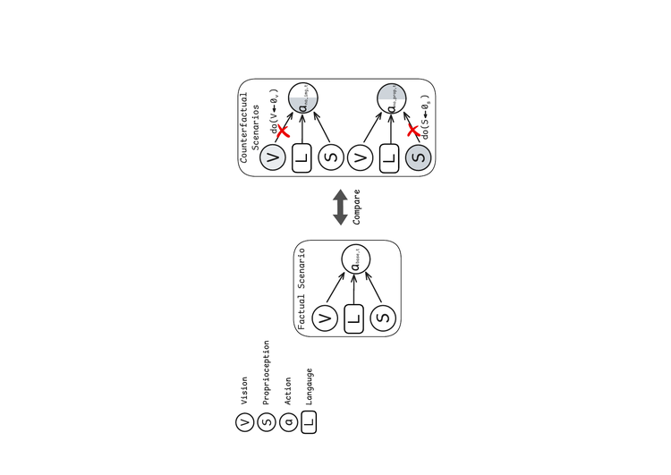
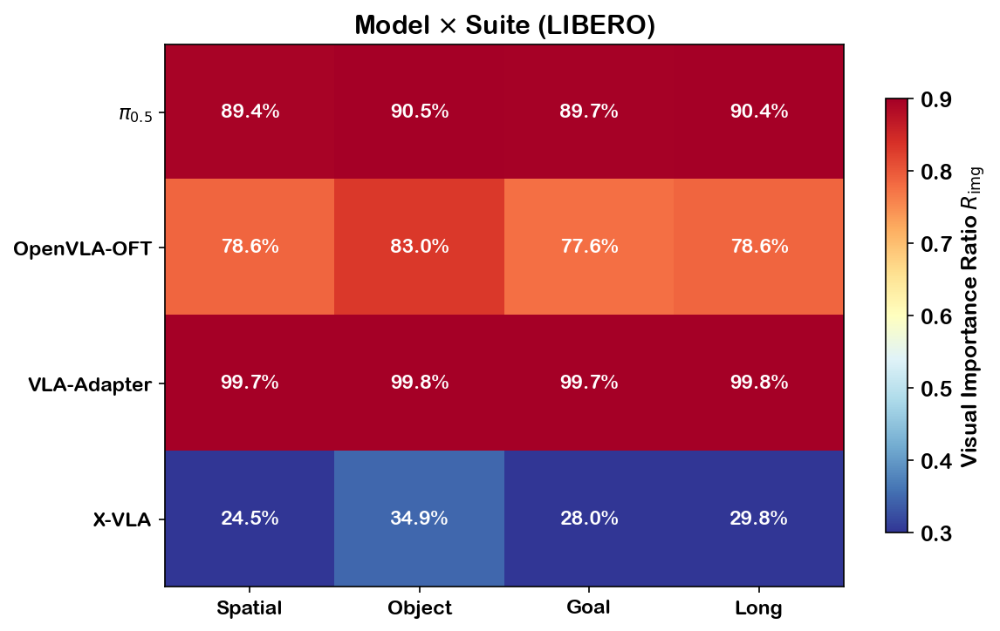
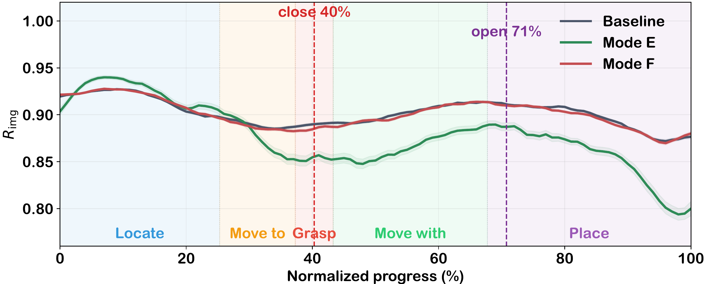
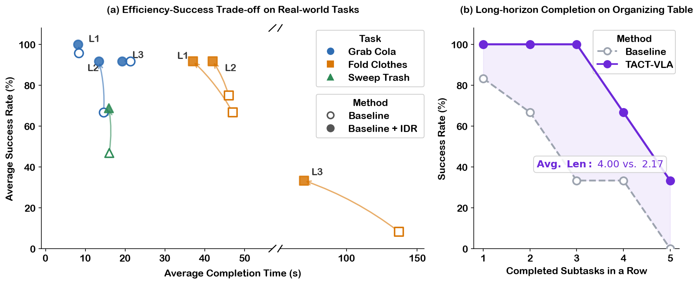

Abstract
Vision-language-action (VLA) models predict sequential actions to execute tasks specified by language instructions, conditioned on visual observations and proprioceptive states. However, existing models typically perform static multi-modal fusion across all inputs for action generation, overlooking the varying importance of visual observations during the dynamic execution process.
In this paper, we propose an Infer-Diagnose-Refine (IDR) framework, a model-agnostic paradigm that can be seamlessly integrated with any VLA model at test time. IDR first infers actions under factual and counterfactual scenarios of visual observations, and then diagnoses the causal effects of visual observations as the estimated dynamic importance, which is finally used to refine the initial action predictions in a training-free manner. Extensive experiments on both simulation benchmarks and real-world tasks yield consistent performance gains across multiple VLA models.
Method Overview

IDR Framework Architecture: Zero-padding interventions for counterfactual inference, norm-based effect quantification, and gated residual fusion.
Key Components
Infer: IDR constructs counterfactual inputs through zero-padding interventions, enabling the frozen VLA model to infer factual and counterfactual outputs under different modality conditions.
Diagnose: The changes of outputs are quantified with a norm-based effect measurement to diagnose the dynamic importance of visual observations.
Refine: The diagnosed effects are integrated with the initial action prediction through gated residual fusion, producing a refined action while preserving low-level control stability.
Causal Analysis

Causal graph illustrating the modality intervention framework.
IDR treats visual importance as a dynamic factor during execution, diagnoses how visual observations causally affect the current prediction, and refines the action accordingly.
Observations from Test-Time Modality Diagnosis
Through test-time causal inference across models and environments, we derive three key observations. To compare visual effects across models and action scales, we compute the normalized visual effect ratio Rimg = Eimg / (Eimg + Eprop + ε).
Observation 1: Deployment environments shift inherent causal effect patterns
| Environment | Suite/Task | Eimg | Eprop | Rimg |
|---|---|---|---|---|
| LIBERO | All suites | 0.67 | 1.59 | 29.7% |
| WidowX | Real-robot tasks | 0.62 | 0.76 | 44.9% |
| CALVIN | ABC→D | 0.61 | 0.60 | 50.7% |
| SIMPLER | Google Variant Aggregation | 1.18 | 0.09 | 93.2% |
| SIMPLER | Google Visual Matching | 0.99 | 0.07 | 93.8% |
The same VLA model (X-VLA) shifts its visual effect pattern substantially across different benchmarks or embodiments. X-VLA is proprioception-primary in LIBERO but becomes vision-dominant in SIMPLER. This environment-dependent shift suggests that modality balance is also associated with deployment environments.
Observation 2: Model architectures shape specific causal effect patterns

Rimg heatmap across models and LIBERO suites. Each model maintains a consistent visual effect pattern.
Within the same benchmark, different VLA models exhibit significantly different causal effect patterns. This variation reflects architectural designs where models relying heavily on a dominant vision-language space maintain a higher Rimg, while architectures that inject proprioceptive states and action tokens earlier show stronger proprioceptive effects. As shown in the figure, π0.5 and OpenVLA-OFT are vision-heavy, X-VLA is proprioception-primary, and VLA-Adapter is vision-dominant.
Observation 3: Manipulation phases dynamically alter causal effect patterns

Phase-aligned visual effect ratio on π0.5. The plot reports the visual effect ratio Rimg over task progress for the baseline, Mode E, and Mode F. Dashed vertical lines indicate gripper close and open events.
Within a single task execution, modality effects change with manipulation phases. The baseline Rimg fluctuates with task progress and changes around gripper close/open events, highlighting the need for dynamic adaptation during execution. Visual effect tends to increase during localization and placement, where external scene information is critical, while proprioceptive effect becomes more influential during motion-transition phases.
Simulation Benchmark Results
LIBERO Benchmark
| Size | Method | Spatial | Object | Goal | Long | Avg |
|---|---|---|---|---|---|---|
| Large (≥4B) | OpenVLA-OFT | 92.60 | 99.20 | 96.20 | 94.60 | 95.65 |
| +IDR | 94.20 | 99.20 | 98.00 | 94.80 | 96.55 | |
| Small (<4B) | π0.5 | 97.50 | 95.00 | 97.00 | 95.50 | 96.25 |
| +IDR | 98.00 | 100.00 | 97.00 | 95.00 | 97.50 | |
| Tiny (<1B) | X-VLA | 92.60 | 99.20 | 98.00 | 94.40 | 96.05 |
| +IDR | 95.00 | 100.00 | 93.00 | 93.00 | 96.50 | |
| VLA-Adapter | 94.20 | 95.60 | 98.00 | 92.60 | 95.10 | |
| +IDR | 97.00 | 100.00 | 96.00 | 94.00 | 96.50 |
IDR consistently improves all four VLA backbones. The largest gains are observed on VLA-Adapter (+1.40) and π0.5 (+1.25), where the visual-effect-guided adaptation provides the most benefit.
CALVIN (ABC→D) Benchmark
| Method | 1/5 | 2/5 | 3/5 | 4/5 | 5/5 | Avg Len |
|---|---|---|---|---|---|---|
| X-VLA | 95.7 | 90.9 | 86.0 | 78.8 | 70.5 | 4.22 |
| +IDR | 98.1 | 94.2 | 89.9 | 84.3 | 77.3 | 4.44 |
| VLA-Adapter | 97.1 | 93.8 | 88.8 | 82.5 | 76.4 | 4.39 |
| +IDR | 97.7 | 94.1 | 89.3 | 83.8 | 77.8 | 4.43 |
On CALVIN, IDR improves both the average completed length (from 4.22 to 4.44) and the 5/5 completion rate (from 70.5% to 77.3%), demonstrating its effectiveness in long-horizon execution.
SIMPLER Benchmark (on X-VLA)
| Environment | Method | Blocks | Eggplant | Spoon | Place | Avg |
|---|---|---|---|---|---|---|
| Google VM | X-VLA | 98.33 | 97.08 | 71.76 | 57.41 | 81.15 |
| +IDR | 96.67 | 96.67 | 75.92 | 59.26 | 82.13 | |
| Google VA | X-VLA | 86.25 | 83.83 | 60.95 | 59.26 | 75.88 |
| +IDR | 89.63 | 83.80 | 68.10 | 74.07 | 78.90 | |
| WidowX | X-VLA | 75.00 | 100.00 | 100.00 | 100.00 | 93.75 |
| +IDR | 87.50 | 100.00 | 100.00 | 95.80 | 95.83 |
On SIMPLER, the largest gain is achieved in the Variant Aggregation (VA) setting (+3.02), where visually grounded manipulation is particularly critical.
Real-World Experiment Results
We evaluate IDR on real-world manipulation tasks using a dual-arm ARX5 platform. The evaluation tasks cover four task categories with different manipulation challenges.

Real-world efficiency--success trade-off. Success rate and average completion time are reported for each task. Arrows (Baseline → IDR) pointing upward/leftward indicate simultaneous improvements in both.
Performance on Folding Clothes, Grab Cola and Sweeping
| Task | Level | Method | Succ. (%) | Avg. Time |
|---|---|---|---|---|
| Grab Cola | Level 1 | Baseline | 95.8 | 8.4s |
| Ours | 100.0 | 8.7s | ||
| Level 2 | Baseline | 66.7 | 14.3s | |
| Ours | 91.7 | 13.4s | ||
| Level 3 | Baseline | 91.7 | 21.3s | |
| Ours | 91.7 | 19.2s | ||
| Folding Clothes | Level 1 | Baseline | 66.7 | 47s |
| Ours | 91.7 | 37s | ||
| Level 2 | Baseline | 83.3 | 52s | |
| Ours | 91.7 | 47s | ||
| Level 3 | Baseline | 8.3 | 222s | |
| Ours | 33.3 | 155s | ||
| Sweeping | — | Baseline | 59.4 | 16.0s |
| Ours | 68.8 | 15.9s |
Organize Table: Long-horizon Sequential Task
| Tasks Completed in a Row | ||||||
|---|---|---|---|---|---|---|
| Method | 1 | 2 | 3 | 4 | 5 | Avg Len ↑ |
| Baseline | 83.3% | 66.7% | 33.3% | 33.3% | 0.0% | 2.167 |
| Ours | 100.0% | 100.0% | 100.0% | 66.7% | 33.3% | 4.000 |
On the challenging 5-step Organize Table task, IDR achieves a 33.3% full-completion rate compared with 0% for the baseline, while increasing the average completed steps from 2.17 to 4.00 out of 5.
Overall, IDR improves manipulation performance across various real-world tasks, particularly on challenging tasks requiring fine-grained visual guidance and contact-rich manipulation.
Ablation Studies
Hyperparameter Sensitivity

Moderate correction scales and intervention thresholds yield the best performance, while excessive correction or uniform intervention degrades action generation.
Correction scale (α): Performance peaks at α=0.08, while nearby values such as α=0.05, 0.10 produce comparable results. Larger values (α ≥ 0.5) degrade performance, indicating that excessive visual-effect correction can destabilize action generation.
Intervention threshold (τ): Small values rarely activate the gate, and therefore provide limited improvement. Uniform intervention with τ=999 performs below the baseline. The best performance is obtained at τ=7, where refinement is applied only to predictions with low diagnosed visual effect.